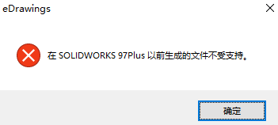
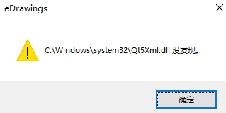

eDrawings
桌面端
程序界面

安装
1、先打开SOLIDWORKS安装包，找到 eDrawings 文件夹。双击 setup。

这个时候会进入到 eDrawings 独立运行的安装指南正常下一步就可以了。

根据自己的需求选择自己所需要的版本如下图所示（网络版填写服务器 25734@xxx单机版填写自己的序列号如果没有序列号或者服务器直接下一步就可以了）。


安装完成后就直接打开使用就可以了。

网络版注意事项:网络版得同事建议大家勾选这个选项如果未勾选这个是会占用网络许可的点数。

功能
您可以利用 eDrawings 执行下列操作：
- 平移、缩放、旋转 、动画、爆炸
- 专业版还允许测量、添加标注、插入横截面
- 专业版还虚拟现实 (VR) 中查看模型

功能-视图
- 重置
重置 工具将模型或工程图返回到其打开时的状态。 当您单击 时，所有旋转、平移、零部件移动、及方位更改全部撤消。
动画
爆炸
您可显示在 eDrawings 中打开的 CAD 应用程序的装配体文档的爆炸视图信息。
- 移动
移动工具让您可以在装配体文件或装配体的工程图文件中移动零部件。eDrawings 将忽略配合，允许您自由移动零部件。 您也可将子装配体作为一个单元来移动。
功能-评估
- 测量
测量 工具测量零件、装配体、及工程图文档中的准确尺寸。
剖面
戳记
将戳记图象添加到文档。
- 质量
您可以显示 eDrawings 零件和装配体文件的质量。 您还可以指定计算质量的单位和精度。 在装配体中，为整个装配体而不是单个零部件计算质量。
- 属性
您可在 eDrawings 中查看 SOLIDWORKS 文件的自定义属性和配置特定属性。
标注
3D 视图
eDrawings 支持零件 (.eprt) 和装配体 (.easm) 中的 3D 视图。
- 注解
eDrawings 支持注解视图。
- 零部件
您可以使用 零部件 窗格上的组件树以管理装配体文件组件
- OLE 对象
在工程图文档保存为 eDrawings 文件时，嵌入 OLE 对象在 eDrawings 中可见。 您可以将 eDrawings 文件作为 OLE 对象嵌入 Microsoft Word 和 PowerPoint 文件中。
1、OLE 对象在 eDrawings 中为只读，您无法双击将其打开。
2、OLE 对象只在 SOLIDWORKS 文档中出现的图纸中显示。 例如，OLE 对象在 eDrawings 中生成的布局图纸上不可见。
3、eDrawings 零件和装配体中的 OLE 对象为静态项目；它们不随模型移动。
功能-虚拟现实VR
Microsoft Windows® 10 1709 及更高版本并使用 Valve SteamVR™ 的计算机在 eDrawings 中支持 VR
使用 HTC VIVE™ 和 VIVE Pro™ VR 耳机，您可以在 VR 中四处走动并浏览您的模型
发布器插件
Inventor
CATIA V5
NX/Unigraphics
Pro/ENGINEER
Solid Edge
SOLIDWORKS
移动端
eDrawings 移动端 适用于 Android 和 IOS 手机和平板电脑。
安装
安卓谷歌商城的下载链接，但应该要翻墙VPN才能访问
苹果程序在 App Store 上下载eDrawings或eDrawings Pro
使用
格式支持：建议是将SW文件另存为（.easm格式）文件，再发到移动端查看。
| 文件类型（版本） | 说明 |
|---|---|
| SOLIDWORKS | .SLDPRT、.SLDASM、.SLDDRW |
| DXF/DWG 文件 | .dxf、.dwg |
| IFC | .ifc |
| IGES（5.1、5.2、5.3） | .iges、.igs |
| JT（v10.0 或更早版本） | .jt .JT 数据格式文件不支持产品制造信息 (PMI)。 |
| STEP（AP 203 E1/E2、AP 214、AP 242） | .step、.stp、.stpz |
Q&A
和文件的版本有关，可以把文件在SW打开，【保存所有】把版本升级即可。也可以考虑另存为【x-t】格式，再eDrawing打开
另存exe
你可能会发现一些dll文件动态链接库的丢失，可以从其他路径下复制到如下提示位置即可。
另存Html
Step A
要将旧的eDrawings®HTM文件(Internet Explorer 5)转换为新的eDrawings®HTM文件(IE 11)，请按照以下步骤操作:
- 在记事本中打开该文件并找到以下内容：
1 | <SCRIPT >function edwsc(){if(event.srcElement.readyState=="complete")EV.LoadXMLBuffer(event.srcElement.XMLDocument);} </SCRIPT > |
替换成如下：
1 | <SCRIPT >function doLoad(){var objDoc = new ActiveXObject("Msxml2.DOMDocument.6.0"); var divs = document.getElementsByTagName("XML"); for (var i = 0; i < divs.length; i++) { objDoc.loadXML(divs[i].innerHTML); EV.LoadXMLBuffer(objDoc); } }if (window.addEventListener) {window.addEventListener("load", doLoad, false); } else if (window.attachEvent) { window.attachEvent("onload", doLoad); } else if (window.onLoad) { window.onload = doLoad; } </SCRIPT > |
- 替换所有
1 | onreadystatechange="edwsc() |
换成：
1 | style = "display:none |
- 保存文件
Step B.
配置ie浏览器打开ActiveX HTML文件，请执行以下步骤:
打开Internet选项控制面板。
在高级选项卡上，在安全下的设置对话框中，进行以下更改。
a.激活“增强保护模式下启用64位进程”选项。
b.取消激活“启用增强保护模式”选项。
- 在“Internet选项”中，单击“安全”选项卡;选择Local intranet区域>单击“自定义级别”。
a.按照附图QA00000125695_4中的规格进行操作。
b.重新启动计算机。
打开Windows®注册表编辑器。
警告:
不正确地编辑注册表可能会严重损坏操作系统。SOLIDWORKS技术支持团队强烈建议您在对注册表进行任何更改之前备份注册表数据。浏览以下注册表项:.
1 | HKEY_CURRENT_USER\Software\Microsoft\Internet Explorer |
删除TabProcConfig注册表项。
浏览以下注册表项:
1 | HKEY_CURRENT_USER\Software\Microsoft\ Windows\CurrentVersion\Internet Settings\Zones\0 |
- 创建一个名称为2500，数据值为0的QWORD键。
Win10没有允许添加ActiveX控件，需要手动开启[在 Internet Explorer 中启用 ActiveX - Microsoft 支持](https://support.microsoft.com/zh-cn/office/在-internet-explorer-中启用-activex-04774c30-617d-4de4-a028-0fe03d68b955#:~:text=在 Internet Explorer 中启用 ActiveX 1 单击“ 工具,Explorer。 5 对于 Internet Explorer 9 和更高版本，还必须禁用“ActiveX 筛选”（如果已启用）。)
要在 Internet Explorer 中运行 Lync Web App，必须启用 ActiveX 控件。
- 单击“工具”>“Internet 选项”。
- 单击“安全”选项卡>“自定义级别”。
- 向下滚动到“ActiveX 控件和插件”，然后为以下选项单击“启用”：
- 运行 ActiveX 控件和插件
- 对标记为可安全执行脚本的 ActiveX 控件执行脚本
- 单击“确定”以关闭对话框，然后重新启动 Internet Explorer。
- 对于 Internet Explorer 9 和更高版本，还必须禁用“ActiveX 筛选”（如果已启用）。
- 禁用“ActiveX 筛选”
在 Internet Explorer 9 和更高版本中，如果启用“ActiveX 筛选”功能，它会阻止正常加载 Lync Web App。 您必须禁用它以便使用 Lync Web App。 如果为某个网站启用了“ActiveX 筛选”，则 Internet Explorer 会在地址栏中显示空图标，以指明已经筛选 ActiveX 控件。
新版本2019后将文件保存为 eDrawings ActiveX 文件
无效类
Application Exception 无效类。这里同c:\windows\system32\wbem\repository位置下的文件有关系。

方法1：实测正常。
1、从【开始/菜单-Windows系统工具-服务】打开服务界面，找到并停止服务“windows management instrumentation”,

2、开启：c:\windows\system32\wbem\repository ，将里面所有的档案备份后，删除，

3、在正常电脑找到步骤2文件夹的repository，在问题电脑进行替换
4、服务启动“windows management instrumentation”服务
5、重新开机 测试问题是否得到解决。
方法2
该类问题主要还是Windows® Management Instrumentation导致，如果以上方法都不行的话请再参考链接中的方法尝试修复： https://www.cnblogs.com/yinghualuowu/p/11002198.html
复制下面文本并保存为bat运行进行修复。 同样请在IT的主导下完成， 并提示风险。
程序打开慢
解决方法：禁用SOLIDWORKS网络许可

名称显示问题
eDrawings装配体树显示为序列号(assempart*)
方法：在eDrawings中直接打开SOLIDWORKS文件，然后保存为eDrawings文件即可。其原因是在SW另存easm时装配体文件名包含双字节字符导致。